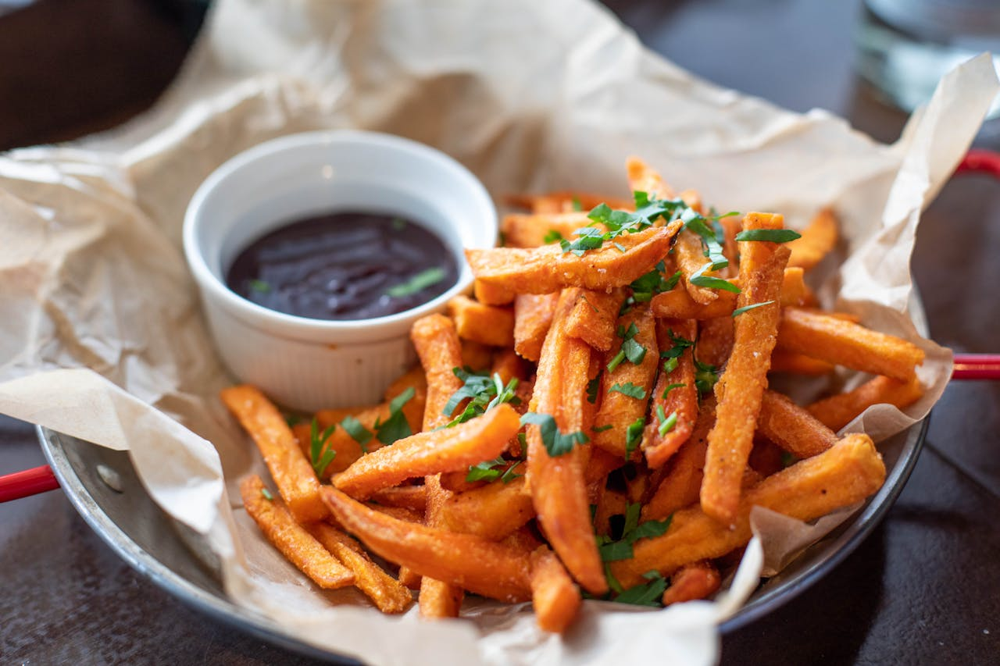
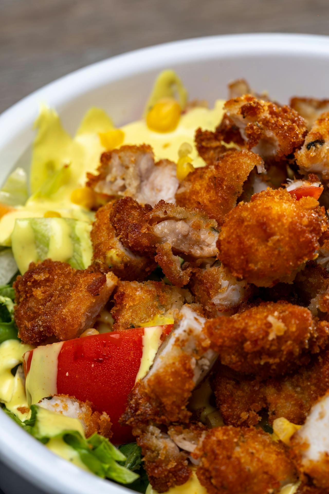

Batata frita na Airfryer com molho barbecue

Ingredientes
- 500g de batata fatiadas em palito
- 50g de molho barbecue light
- 10g de salcinha picada
Modo de preparo das batatas
Coloque metade das babatas na airfryer e frite-as sem óleo a 2000C durante 15 minutos e depois repita o processo com a outra metade. Em seguida coloque a salcinha picada sobre as batatas e sirva com molho barbecue light.
Camarão na Airfryer
Ingredientes
- 300g de camarão sem cabeça e limpo
- Suco de meio limão
- 160g de farinha de milho
- 160g de farinha de rosca
- Pimenta a gosto
- Sal a gosto
- 50mL de molho de mostarda Alemã
- 50mL de molho de molho Barbecue light
Modo de preparo do camarão
Em uma tigela coloque os camarões com sal, a pimenta, e o suco de limão, deixe a mistura descansando por meia hora.
Em uma segunda tigela misture a farinha de milho com a farinha de rosca e empane os camarões, coloque-os na airfryer e frite-os por 15 minutos a 2100C e depois sirva-os acompanhados do molho barbecue light ou da mostarda Alemã.
Anéis de cebola na Airfryer
Ingredientes da massa
- 3 cebolas grandes cortadas em rodelas de 2cm de largura
- 400g de farinha integral
- 400mL de água em temperatura ambiente
- Pimenta vermelha em pó a gosto
- Sal a gosto
Modo de preparo dos anéis de cebola
Em uma tigela misture 200g da farinha integral com a água, sal e pimenta, misture bem até ficar uma massa líquida homogênia. Em seguida mergulhe os anéis de cebolas uma a uma em seguida coloque-as na airfryer à 1800C, frite até dourar, retire-as e sirva.
Donats na Airfryer
Ingredientes da massa
- 2 ovos
- 400g de farinha integral
- 180g de açúcar demera
- 90g de fermento biológio
- 250mL de água em temperatura ambiente
- 5g de sal
- 8g de manteiga
- 500mL de óleo
Modo de preparo da massa dos Donats
Em uma tigela misture os ovos, a farinha, o açúcar, a água, o sal, o fermento e a manteiga, misture com as mãos até obter uma massa homogênia e deixe-a descansado por 25 minutos.
Despois do tempo de descanso faça rolinhos compridos e feche-os como anéis e coloque na airfryer por 10 minutos à 2000C, depois espere esfriar.
Ingredientes da cobertura
- 300mL de água
- 150g de açúcar demera
- 20 gotas de essência de morango
- 2g de corante vermelho
Modo de preparo da cobertura
Em uma panela coloque a água, o corante, o açúcar e a essência e leve ao fogo à 1800C, mexa até que a clada engrosse. Mole os donats fritos nessa calda e enfeite com confetes coloridos ou deixe alguns sem a cobertura e sirva.
Nugets frito na Airfryer
Ingredientes
Modo de preparo do nuget
Coloque metade dos nugets na airfryer por 15 minutos à 2200C e depois frite a outra metade. Depois coloque-os no suporte de vidro ou no recipiente de sua preferência e sirva acompanhado do molho ao seu gosto.
Frango frito na Airfryer ao molho de mostarda

Ingredientes da massa
- 1kg de peito de frengo fatiado em tiras largas de 3cm
- 2 ovos
- 400g de farinha integral
- 100mL de água em temperatura ambiente
- 5g de sal
Modo de preparo da massa do frango frito
Em uma tigela misture os ovos, a farinha,a água e o sal, misture com as mãos até obter uma massa liquída. Mergulhe as tiras de frango e coloque-as na airfryer por 15 minutos à 2200C.
Ingredientes do molho de mostarda
- 300g de mostarda alemã light
- 150g de de maionese light
- 20 gotas de limão
- pimenta em pó vermelha a gosto
- 2 tomates cortados em 4 fatias
- 1 abobrinha cortada em fatias bem finas
Modo de preparo do molho de mostarda
Em uma tigela misture a mostarda, a maionese, o limão a pimenta e misture bem.
Em uma travessa redonda coloque uma camada da abobrinha fatiada depois coloque um pouco do molho e por cima coloque os frangos fritos e os tomates em torno do prato depois sirva.